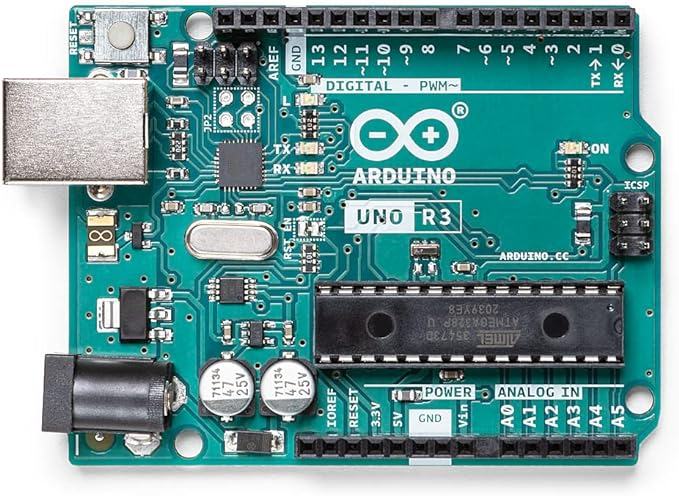
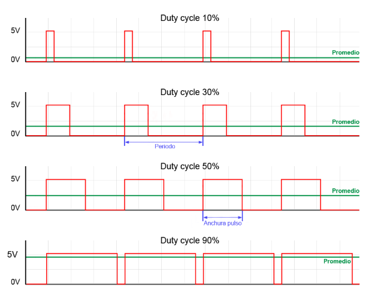

Els diferents microcontroladors tenen en comú els següents aspectes:
PWM significa modulació de l'ample de banda, en anglès Pulse Width Modulation i és una forma d'aconseguir una sortida analògica a partir de diverses sortides digitals, molt ràpides.
PWM es representa amb el símbol "~" tal com podem veure ala imatge següent d'un Arduino Uno
Més amunt podem veure que els pins números 3, 5, 6, 9, 10 i 11.
Aquests PWM són sortides analògiqes de 8 bits, en el cas de Arduino Uno Rev3, d'acord amb el fabricant, mentres en el cas d'Arduino Uno Rev 4 és de 12 bits, segons el fabricant que l'anomena DAC, que vol dir Digital Analog Converter
Tenir 8 o 12 bits en un convertidor digital analògic o DAC (Digital analog Converter) tipus PWM fa que tinguem 28 o 210 nivells diferents de corrent, es a dir 256 nivells diferents o 2048 nivells diferents
Suposem que tan Arduino Uno Rev3 o Rev4 poden donar 5 volts com a màxim. Quina seria la resolució en milivolts de cada Arduino?
5 volts dividit entre 256 dona 0.01953125 volts= 19,53125 milivolts per Arduino uno Rev3
5 volts dividit entre 2048 dona 0.00244140625 volts= 2,44140625 milivolts per Arduino uno Rev4
Els minivolts anteriors són la resolució que aconseguim. Imaginem que volem regular la intensitat d'un LED amb un Arduino Uno Rev3 aconseguim menys fluid i amb graons més grans, es a dir canvis mé bruscs perque 256 canvis son menys que 2048 volts. A continuació veurem una imatge que representa com conbinant moltes senyals digitals ràpidament sembla que generem un senyal analògic i aixó És la base del PWM.
Quan major és l'amplada